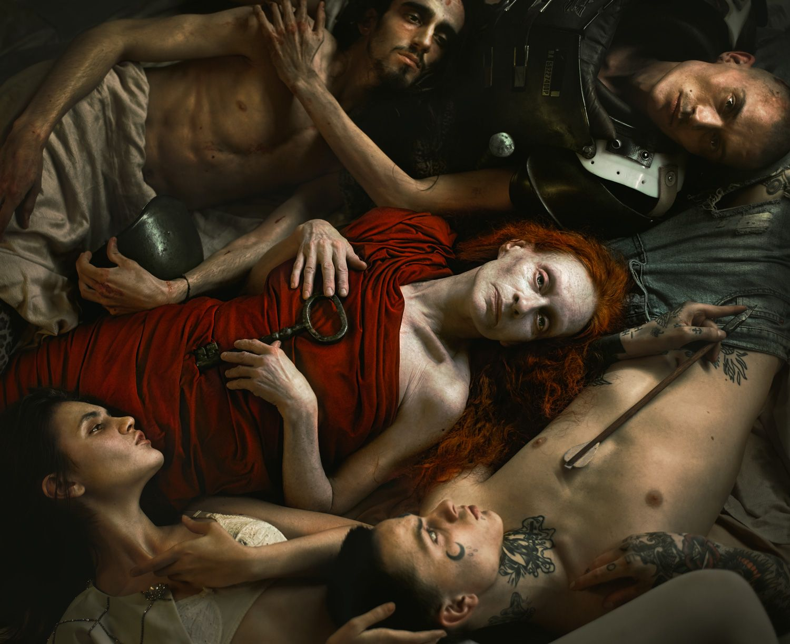
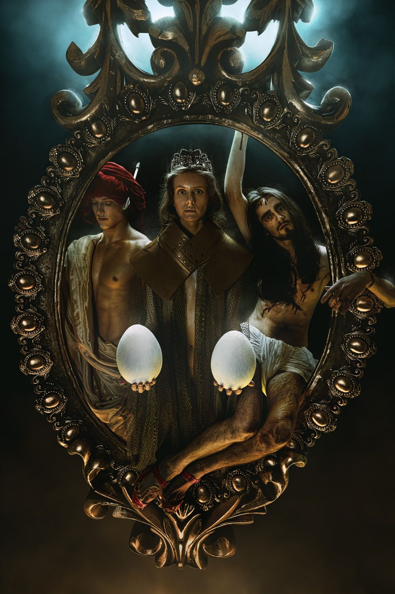
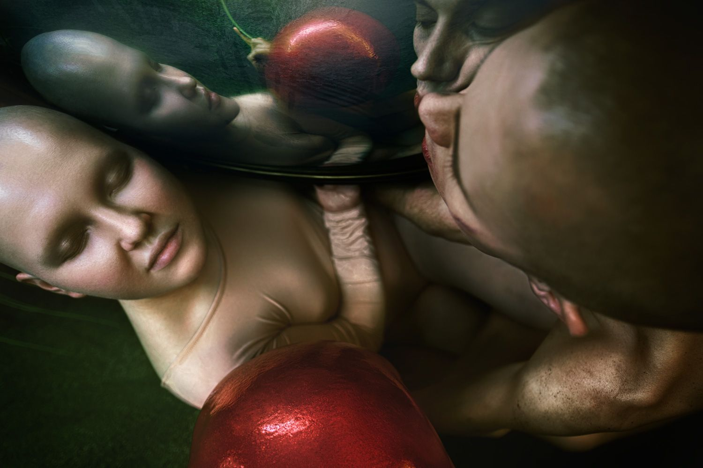

Tableaux vivants for the 500th anniversary of Hieronymus Bosch: his symbols played by people, a key and a cage, giant cherries and an apple, a wheel, a mirror, a skull and the plague doctor in red. Shown at Artplay, Moscow, 2016.


Everything here was built for real and shot on camera.
Discuss a project →Working worldwide, remotely. Invoicing in USD or EUR.